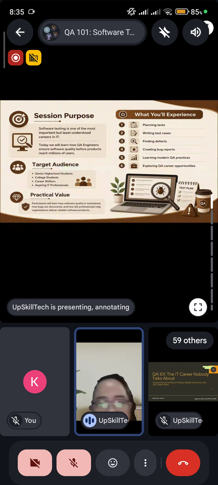
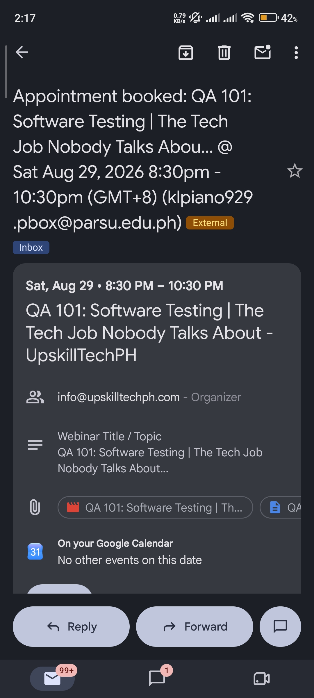
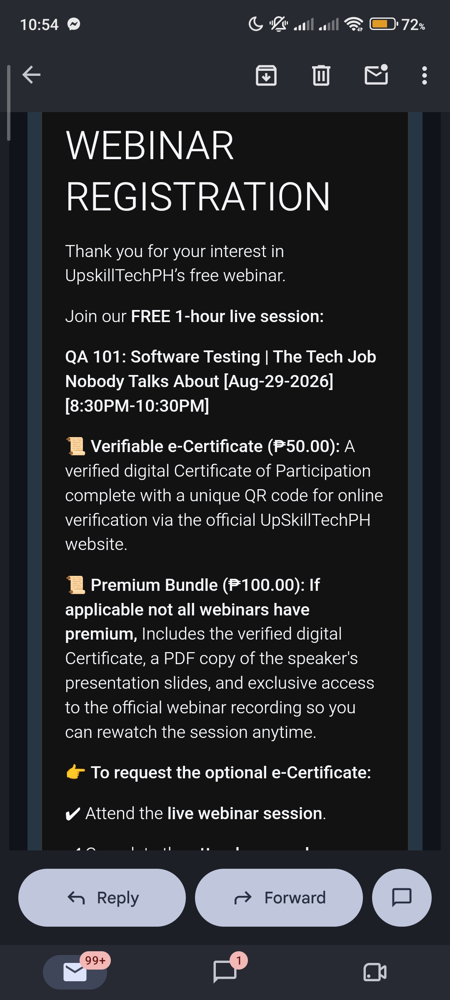

The QA 101 webinar, hosted by UpSkillTechPH Training Services and led by speaker Jelly Anne Lumactud on August 29, 2026, introduced participants to software testing, quality assurance, and QA career paths, showing how QA Engineers ensure software quality before products reach millions of users through hands-on activities in test planning, test case writing, bug hunting, and bug reporting.
It covered the difference between STLC (Software Testing Life Cycle), which validates that the product was built right and is tester-centric, and SDLC (Software Development Life Cycle), which focuses on building the product right and is developer-centric, along with the five common types of software testing — functional, UI, regression, performance, and user acceptance testing — each aimed at answering whether the software works, looks right, stays intact after changes, performs well under load, and meets expectations.
It walked through how to build a test plan (covering project information, scope, features to test, out-of-scope items, testing approach, resources, schedule, risks, and entry/exit criteria) using a food delivery app as a live example, and how to structure a traditional test case with a test case ID, feature, objective, preconditions, steps, and expected result, demonstrated through a sample login test case.
Software testing protects users and businesses — and makes QA a valuable, growing career in IT.
It also introduced Gherkin, a business-readable language used in Agile and BDD environments built around the Feature, Scenario, Given, When, and Then keywords to make requirements clear for both business and technical teams.
The session included a bug hunting workshop where participants searched for broken links, invalid validations, missing images, layout problems, and UX issues, followed by a reflection on the QA mindset and its role in reducing risk and improving user trust. It closed by outlining QA career opportunities from entry-level roles like QA Tester and QA Associate to advanced roles like QA Analyst, Test Automation Engineer, and QA Lead, reinforcing the key takeaway that software testing protects users and businesses, prevents costly quality problems, and makes QA a valuable and growing career in IT.
STLC validates that the product was built right (tester-centric), while SDLC focuses on building the product right (developer-centric) — the two are complementary, not interchangeable.
A clear test plan and well-structured test cases — like the login example walked through in the session — are the foundation of effective QA work.
Software testing protects users and businesses from costly quality problems, and QA offers a real, growing career path in IT.